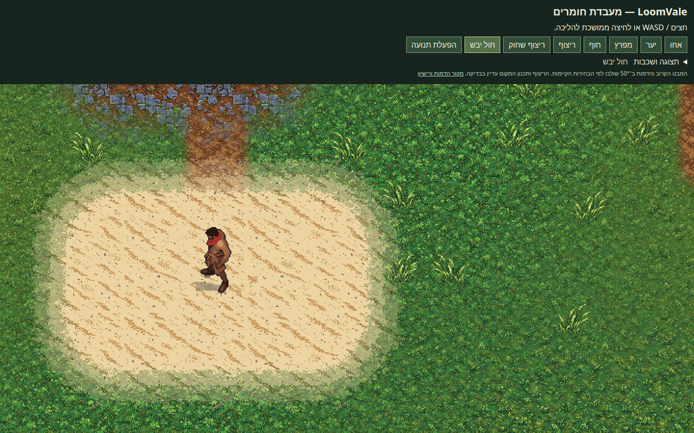
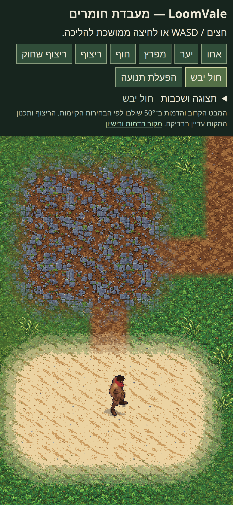

ללכת בעולם · החול וההליכה שאושרו
העקבות הוסרו מהעולם: ההתאמה לדריכה של כל רגל לא מספקת. הצילומים להלן מתעדים את הניסוי שנשמר להמשך.
בניסוי שנשמר: הרגל משאירה עקבה בדריכה על החול. העקבות דועכות בארבעה שלבים ונעלמות אחרי 20 שניות. עמידה או תנועה חסומה אינן יוצרות עקבות.


זהו תיעוד של ניסוי שהושהה. הריצוף ותכנון המקום נשארים בסקירה הנפרדת שלהם.